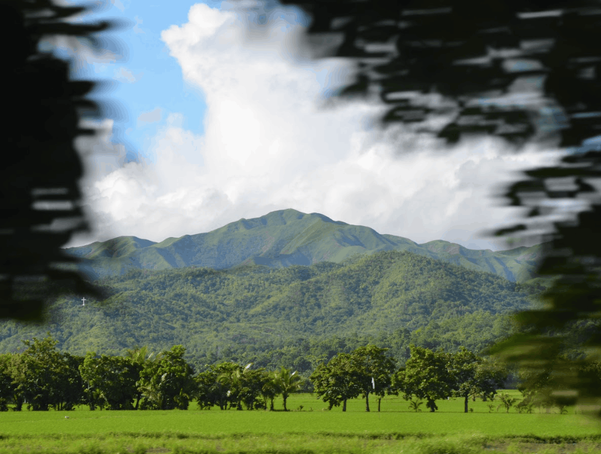

About Me
Hello, I’m Aliah Olga A. Garcia, but you can call me Ali or Olga. I am a 21-year-old third-year BAMS student. I reside in Valenzuela City. I used to be an active chorale member, and from being exposed to it, I developed a great sense of fulfilment in performing and singing. I hope to be successful and be very happy with the path I take in this lifetime.
Passion Projects
1. Photography
Photography is one of my favorite things to do. I consider it one of my mediums of expression. It makes me reflect on how beautiful life is and the joy of capturing the exact moment. It also makes me want to look back on these moments in life. It has the power to make me feel alive and is proof that I have lived.

See more Gallery
2. Music
I have always been a big music enthusiast. I developed a love for singing at a young age; back then, I was often invited to perform at several school events. I joined the chorale scene when I started senior high school shortly after the pandemic. Since then, I have become even more passionate about music and performing song covers in front of an audience. Sharing my voice brings me so much joy, even though I know I still have plenty of room to grow. Doing song covers is one of my passion projects that keep me inspired every single time.
See more Song Covers
3. Fandom Activities
Fangirling has been a part of my daily life since I was young. I think it is quite impossible for me not to have something to be super enthusiastic about. I enjoy attending fan meetings and concerts whenever I can, and I definitely enjoy consuming content from my favorite artists, especially since they inspire me to keep moving forward and develop as a person over time.
Things I Love
- Music
- Photography
- Cute stuff
- Movies/Series
- Clouds
- My Phone